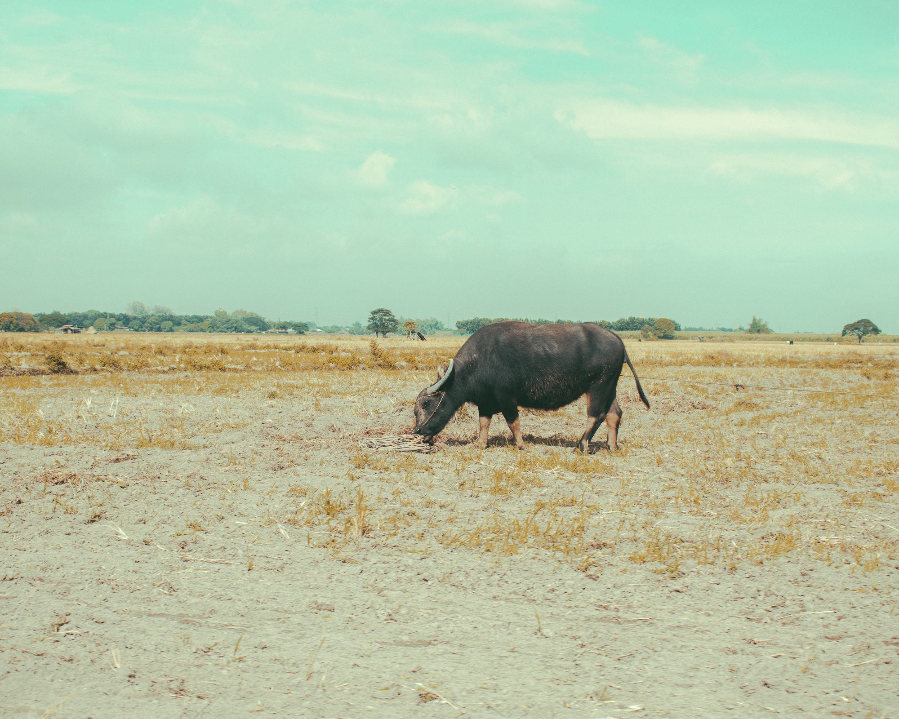

"Pearl of the Orient" are a series of photos taken in the Philippines during my trip December of 2019. For this series, I wanted to capture the essence of the country life along with the beauty of the city. I wanted to capture both sides of what makes the country beautiful. I want these photos to serve as a memory of my trip to the Philippines with appreciation of the beauty of nature and the city.
